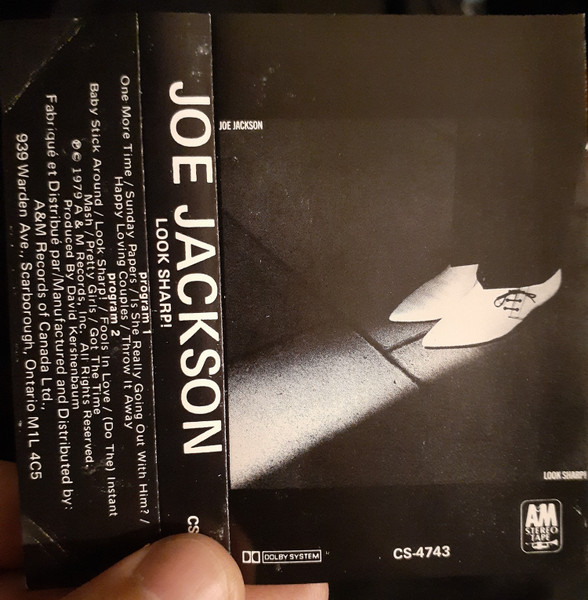

CASSETTE
Look Sharp!
Joe Jackson
Media: NM · Sleeve: VG+
CA$7.00
Discogs SuggestedCA$13.69
Discogs MedianCA$13.69
Discogs HighCA$13.69
- Year
- 1979
- Label
- A&M Records
- Catalog #
- CS-4743
- Country
- CACanada
- Genre / Style
- Rock · New Wave, Power Pop